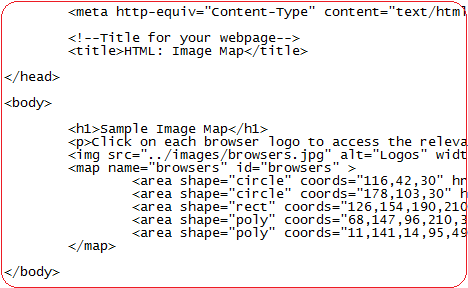

20 December 2019
A long time ago (the 1970’s) when I was born there was no Internet at all. With invention of computers and increased popularity among scientists, there appeared a desire and need to connect them together so scientists could collaborate their findings and exchange information quicker.
In 1991, I received my flight pilot licence in Russia for a Yak-52. In the same year British Scientist Timothy John Berners-Lee at CERN in Geneva invented the Hypertext Mark-up Language, also known as HTML, which was designed for marking and formatting World Wide Web documents. Then, I could not even imagine the impact this would be for millions of people in the future. At this time, I only began to learn Q Basic on DOS systems in Neftekamsk secondary school.
HTML is a child of SGML. Now not only specialists could use it but people also started to enjoy the benefit of HTML. Since its first days, HTML has had many advantages: simplicity, which was achieved by means of a small set of structural elements called descriptors (also known as tags). All tags are written in angle brackets, for example <img> and convey some meaning.
6th August 1991: the world’s first web site was created by Tim Berners-Lee. Same time in Russia happens the coup and Boris Yeltsin took the power of Mikhail Gorbachev.
June 1993: I was coding in Russian College on Basic language some small projects. Same time was released HTML 1.2 This version had more than 40 tags, and 3 of them had some kind of visual formatting of documents (for example, bold italics). The rest of the tags served exclusively for logical mark-up.
1994: was great year for me as I finished my College studying with Award Diploma and start to study in Izevsk University. And World Wide Web Consortium (W3C) was founded by Tim Berners-Lee. The mission of W3C’s was and remains as follows: “To lead the World Wide Web to its full potential by developing protocols and guidelines that ensure the long-term growth of the Web”. HTML was released with one basic set of tags and attributes and eventually web pages became as we know them today.
22nd September 1995: Version 2.0 was released. Same year I changed place of education from University to Academy in same Russian city Izevsk. Noticeable improvements in this version were: Queries: such as keyword search, Forms for data transfer from computer to server: for example, to enter a birthdate or to choose one of several options in a poll.
March 1995: On my 20th birthday I was studying in Academy and start to work on Power Plant close to my city. But Work on HTML 3.0 begun. The first version of the standard included a lot of interesting things:
tags for tables creating
layout of math formulas
text wrap, etc.
HTML 3.0 still keep the initial properties, but added support for a new facility which would serve to format web pages’ design, much needed for users who interested in look of web pages.
17th December 1996: release date of CSS (Cascading Style Sheets). These style sheets can be attached to an HTML document and serve for the visual design of various parts of documents. That time Microsoft already released Windows 95. This windows I had to install many times for myself and my friends’ computers. It was so unstable that even installation process could corrupt some file to the point that newly installed copy of windows did not work properly, and installation process had to be repeated again. But it was big difference have the black screened of the DOS system. So too did the CSS system allow fonts and the size of web pages to be easily changed. To demonstrate the wonders of CSS, Dave Shea from Canada created CSS Zen Garden, where web developers design the same HTML page in completely different CSS styles.
14th January 1997: HTML 3.2 was released a month after the approval of CSS and was already fully adapted to interact with style sheets. Many innovations from version 3.0 were dropped, and developers instead added some unusual elements, which were supported by Netscape Navigator and Internet Explorer 3. (Vertex Academy, 2016.)
18th December 1997: HTML 4.0. In this version, they cleaned up many of the elements from the previous versions. Many tags were marked as outdated and not recommended for use. Instead, it was necessary to use CSS style sheets. The new version included support for frames, scripts, and general procedures of object embedding. Also, it improves tables and forms, which in addition to other advantages, provided greater accessibility for physically handicapped people. (Vertex Academy, 2016.)
24th December 1999: That time I was preparing my diploma for graduation it was end of my education in Academy. I had good and hard time during my education period, but I learn for rest of my life how to learn by my own initiative without help of teachers. And of course HTML 4.01 was released. In this version, they slightly tweaked objects, forms, and images, fixed some bugs, and created a generally more stable version, which would be used by web developers for more than 10 years. (Vertex Academy, 2016.)
2004: Swiss programmer Ian Hickson (at the time a developer for Opera) and several representatives of companies such as Mozilla, Google, and Apple, founded a working group called WHATWG (The Web Hypertext Application Technology Working Group). (Vertex Academy, 2016.). For two years, both the W3C and the WHATWG worked on their own projects. It later became clear that the WHATWG had achieved some results, though XHTML2 was never implemented. In 2006, Tim Berners-Lee announced that the W3C and the WHATWG would work together on the further development of HTML. (Vertex Academy, 2016.)
At the same time I was studying English in Ireland for two years. I could not even imagine then, that Google over a decade would become so big and powerful. Yes, I was using Mozilla Firefox and Opera a lot of that time. They were the best browsers for the internet population in 2004.
October 28, 2014: On this day, the W3C started recommending the use of HTML5. The new version made the syntax stricter, compared to previous versions. Support for multimedia technologies was improved. There were 28 new structural elements, which made the code more understandable. Some outdated tags were removed. They paid more attention to support of the scripts, such as JavaScript. (Vertex Academy, 2016.). Same year my daughter was 6. She went to junior school in Balbriggan and enjoy that time painting some pictures.
In October 2015: The W3C started working on the draft of HTML 5.1 with the goal of fixing some of the issues that were left open in HTML5. After many iterations, it reached the state of “Candidate Recommendation” in June 2016, “Proposed Recommendation” in September 2016 and finally a W3C Recommendation in November 2016. (Vertex Academy, 2016.)
14 December 2017: W3C Recommendation. A number of added features are actually the integration of the work done in W3C, which includes the Payment Request API to make transactions easier and error-free. To enhance security, Content Security Policy has been added. (Vertex Academy, 2016.)
HTML progressed many years without sign of halt. Nobody knew long time ago that HTML will survive on the market for so long. In my opinion HTML still serves us well because it was invented at the right time, the language satisfies all specifications needed to produce interactive and dynamic web pages and also very importantly that HTML was free to use for both web developers and developers of web browsers.
I imagine for a minute that at the same time you are reading this text, somewhere in the world is inventing more and more cool stuff. We will feel the impact of these ideas in the near future. The same happens with HTML all the time. Some developers improving HTML now, and adding features that will make wow effect for our browsing experience sooner than we may think. History happens right now and around us. We are living in an amazing time when new advances in HTML are happening so quickly that we are feeling the benefit almost immediately.
Facebook.com. 2019. [Online] Available from: https://www.facebook.com/worldwidewebtim/ [Accessed 28 November 2019].
Info.cern.ch. 1989. History to date. [Online] Available from: http://info.cern.ch/hypertext/WWW/History.html [Accessed 28 November 2019].
Jelisejevs, P. 2016. [Online] Available from: https://www.sitepoint.com/whats-new-in-html-5-1/ [Accessed 28 November 2019].
Landofcode.com. 2019. History of HTML. [Online] Available from: http://www.landofcode.com/html-tutorials/html-history.php [Accessed 28 November 2019].
Rahman, A. 2017. A Learning Journey to Web Development: History of HTML. [Online]. Available from: https://medium.com/ux-art/a-learning-journey-to-web-development-history-of-html-401c197468c8 [Accessed 28 November 2019].
University of Washington. 2019. A Brief History of HTML. [Online] Available from: https://www.washington.edu/accesscomputing/webd2/student/unit1/module3/html_history.html [Accessed 28 November 2019].
Vertex Academy. 2016. The History of the Development of HTML. [Online] Available from: https://vertex-academy.com/tutorials/en/html-history/ [Accessed 28 November 2019].
Wikipedia.org. 2019. Comparison of web browsers. [Online] Available from: https://en.wikipedia.org/wiki/Comparison_of_web_browsers [Accessed 28 November 2019].
Wikipedia.org. 2019. ARPANET. [Online] Available from: https://en.wikipedia.org/wiki/ARPANET [Accessed 28 November 2019].
Wikipedia.org. 2019. University of California, Los Angeles. [Online] Available from: https://en.wikipedia.org/wiki/University_of_California,_Los_Angeles [Accessed 28 November 2019].